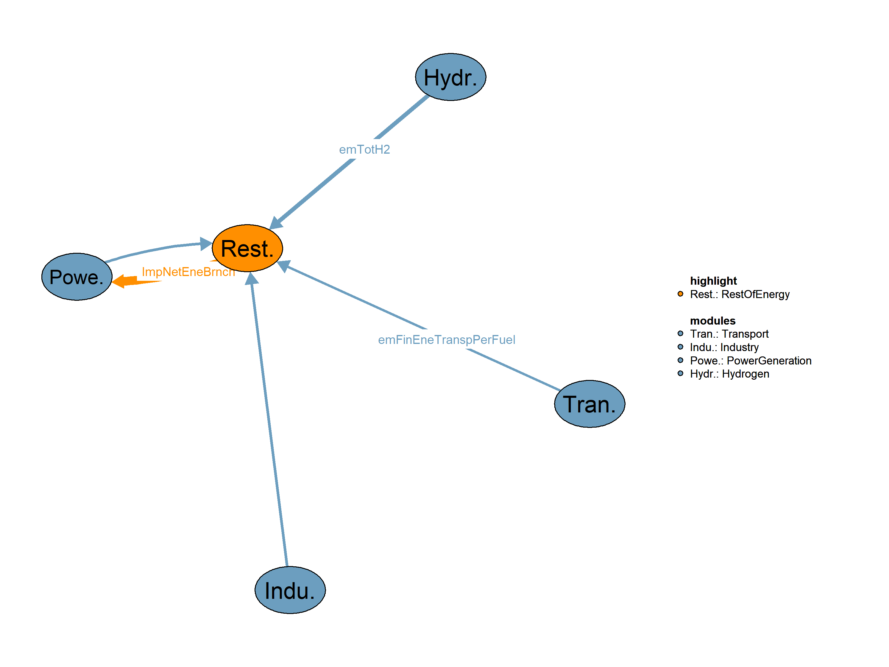

This is the RestOfEnergy module.

| Description | Unit | A | |
|---|---|---|---|
| VMVConsFuel (allCy, DSBS, EF, YTIME) |
Consumption of fuels in each demand subsector, excluding heat from heatpumps | \(Mtoe\) | x |
| VMVDemFinEneTranspPerFuel (allCy, TRANSE, EF, YTIME) |
Final energy demand in transport subsectors per fuel | \(Mtoe\) | x |
| VMVDemTotH2 (allCy, YTIME) |
Hydrogen production requirement in Mtoe for meeting final demand | x | |
| VMVProdElec (allCy, PGALL, YTIME) |
Electricity production | \(TWh\) | x |
| VMVProdH2 (allCy, H2TECH, YTIME) |
Hydrogen Production by technology in Mtoe | x |
| Description | Unit | |
|---|---|---|
| VMVConsFiEneSec (allCy, EFS, YTIME) |
Final consumption in energy sector | \(Mtoe\) |
| VMVConsFinEneCountry (allCy, EF, YTIME) |
Total final energy consumnption | \(Mtoe\) |
| VMVConsFinNonEne (allCy, EFS, YTIME) |
Final non energy consumption | \(Mtoe\) |
| VMVImpNetEneBrnch (allCy, EFS, YTIME) |
Net Imports | \(Mtoe\) |
| VMVLossesDistr (allCy, EFS, YTIME) |
Distribution losses | \(Mtoe\) |
This is the legacy realization of the RestOfEnergy module.
Equations*** REST OF ENERGY BALANCE SECTORS EQUATIONS
QOutTransfDhp(allCy,EFS,YTIME) "Compute the transformation output from district heating plants"
QCapRef(allCy,YTIME) "Compute refineries capacity"
QOutTransfRefSpec(allCy,EFS,YTIME) "Compute the transformation output from refineries"
QInputTransfRef(allCy,EFS,YTIME) "Compute the transformation input to refineries"
QOutTransfNuclear(allCy,EFS,YTIME) "Compute transformation output from nuclear plants"
QInpTransfNuclear(allCy,EFS,YTIME) "Compute transformation input to nuclear plants"
QOutTransfTherm(allCy,EFS,YTIME) "Compute transformation output from thermal power plants"
QInpTotTransf(allCy,EFS,YTIME) "Compute total transformation input"
QOutTotTransf(allCy,EFS,YTIME) "Compute total transformation output"
QTransfers(allCy,EFS,YTIME) "Compute transfers"
QConsGrssInlNotEneBranch(allCy,EFS,YTIME) "Compute gross inland consumption not including consumption of energy branch"
QConsGrssInl(allCy,EFS,YTIME) "Compute gross inland consumption"
QProdPrimary(allCy,EFS,YTIME) "Compute primary production"
QExp(allCy,EFS,YTIME) "Compute fake exports"
QImp(allCy,EFS,YTIME) "Compute fake imports"Interdependent Equations
Q03ImpNetEneBrnch(allCy,EFS,YTIME) "Compute net imports"
Q03ConsFiEneSec(allCy,EFS,YTIME) "Compute energy branch final consumption"
Q03InpTransfTherm(allCy,EFS,YTIME) "Compute transformation input to power plants"
Q03TransfInputDHPlants(allCy,EFS,YTIME) "Compute the transformation input to distrcit heating plants"
Q03ConsFinEneCountry(allCy,EFS,YTIME) "Compute total final energy consumption"
Q03ConsFinNonEne(allCy,EFS,YTIME) "Compute final non-energy consumption"
Q03LossesDistr(allCy,EFS,YTIME) "Compute distribution losses"
;
Variables*** REST OF ENERGY BALANCE SECTORS VARIABLES
VOutTransfDhp(allCy,EFS,YTIME) "Transformation output from District Heating Plants (Mtoe)"
VCapRef(allCy,YTIME) "Refineries capacity (Million barrels/day)"
VOutTransfRefSpec(allCy,EFS,YTIME) "Transformation output from refineries (Mtoe)"
VInputTransfRef(allCy,EFS,YTIME) "Transformation input to refineries (Mtoe)"
VOutTransfNuclear(allCy,EFS,YTIME) "Transformation output from nuclear plants (Mtoe)"
VInpTransfNuclear(allCy,EFS,YTIME) "Transformation input to nuclear plants (Mtoe)"
VOutTransfTherm(allCy,EFS,YTIME) "Transformation output from thermal power stations (Mtoe)"
VInpTotTransf(allCy,EFS,YTIME) "Total transformation input (Mtoe)"
VOutTotTransf(allCy,EFS,YTIME) "Total transformation output (Mtoe)"
VTransfers(allCy,EFS,YTIME) "Transfers (Mtoe)"
VConsGrssInlNotEneBranch(allCy,EFS,YTIME) "Gross Inland Consumption not including consumption of energy branch (Mtoe)"
VConsGrssInl(allCy,EFS,YTIME) "Gross Inland Consumption (Mtoe)"
VProdPrimary(allCy,EFS,YTIME) "Primary Production (Mtoe)"
VExp(allCy,EFS,YTIME) "Exports fake (Mtoe)"
VImp(allCy,EFS,YTIME) "Fake Imports for all fuels except natural gas (Mtoe)"Interdependent Variables
VMVImpNetEneBrnch(allCy,EFS,YTIME) "Net Imports (Mtoe)"
VMVConsFiEneSec(allCy,EFS,YTIME) "Final consumption in energy sector (Mtoe)"
VMVInpTransfTherm(allCy,EFS,YTIME) "Transformation input to thermal power plants (Mtoe)"
VMVTransfInputDHPlants(allCy,EFS,YTIME) "Transformation input to District Heating Plants (Mtoe)"
VMVConsFinEneCountry(allCy,EF,YTIME) "Total final energy consumnption (Mtoe)"
VMVConsFinNonEne(allCy,EFS,YTIME) "Final non energy consumption (Mtoe)"
VMVLossesDistr(allCy,EFS,YTIME) "Distribution losses (Mtoe)"
;GENERAL INFORMATION Equation format: “typical useful energy demand equation” The main explanatory variables (drivers) are activity indicators (economic activity) and corresponding energy costs. The type of “demand” is computed based on its past value, the ratio of the current and past activity indicators (with the corresponding elasticity), and the ratio of lagged energy costs (with the corresponding elasticities). This type of equation captures both short term and long term reactions to energy costs. * REST OF ENERGY BALANCE SECTORS The equation computes the total final energy consumption in million tonnes of oil equivalent for each country , energy form sector, and time period. The total final energy consumption is calculated as the sum of final energy consumption in the Industry and Tertiary sectors and the sum of final energy demand in all transport subsectors. The consumption is determined by the relevant link between model subsectors and fuels.
Q03ConsFinEneCountry(allCy,EFS,YTIME)$(TIME(YTIME)$(runCy(allCy)))..
VMVConsFinEneCountry(allCy,EFS,YTIME)
=E=
sum(INDDOM,
sum(EF$(EFtoEFS(EF,EFS) $SECTTECH(INDDOM,EF) ), VMVConsFuel(allCy,INDDOM,EF,YTIME)))
+
sum(TRANSE,
sum(EF$(EFtoEFS(EF,EFS) $SECTTECH(TRANSE,EF)), VMVDemFinEneTranspPerFuel(allCy,TRANSE,EF,YTIME)))
+
sum(EF$(sameas(EF, "H2") AND EFtoEFS(EF,EFS)), VMVDemTotH2(allCy,YTIME)) !! Here hydrogen is included as a part of the energy consumption.
;The equation computes the total final energy consumption in million tonnes of oil equivalent for all countries at a specific time period. This is achieved by summing the final energy consumption for each energy form sector across all countries.
$ontext
qConsTotFinEne(YTIME)$(TIME(YTIME))..
vConsTotFinEne(YTIME) =E= sum((allCy,EFS), VMVConsFinEneCountry(allCy,EFS,YTIME) );
$offtextThe equation computes the final non-energy consumption in million tonnes of oil equivalent for a given energy form sector. The calculation involves summing the consumption of fuels in each non-energy and bunkers demand subsector based on the corresponding fuel aggregation for the supply side. This process is performed for each time period.
Q03ConsFinNonEne(allCy,EFS,YTIME)$(TIME(YTIME)$(runCy(allCy)))..
VMVConsFinNonEne(allCy,EFS,YTIME)
=E=
sum(NENSE$(not sameas("BU",NENSE)),
sum(EF$(EFtoEFS(EF,EFS) $SECTTECH(NENSE,EF) ), VMVConsFuel(allCy,NENSE,EF,YTIME))); The equation computes the distribution losses in million tonnes of oil equivalent for a given energy form sector. The losses are determined by the rate of losses over available for final consumption multiplied by the sum of total final energy consumption and final non-energy consumption. This calculation is performed for each time period. Please note that distribution losses are not considered for the hydrogen sector.
Q03LossesDistr(allCy,EFS,YTIME)$(TIME(YTIME)$(runCy(allCy)))..
VMVLossesDistr(allCy,EFS,YTIME)
=E=
(iRateLossesFinCons(allCy,EFS,YTIME) * (VMVConsFinEneCountry(allCy,EFS,YTIME) + VMVConsFinNonEne(allCy,EFS,YTIME)))$(not H2EF(EFS))
+
( VMVDemTotH2(allCy,YTIME) - sum(SBS$H2SBS(SBS), VDemSecH2(allCy,SBS,YTIME)))$H2EF(EFS); The equation calculates the transformation output from district heating plants . This transformation output is determined by summing over different demand sectors and district heating systems that correspond to the specified energy form set. The equation then sums over these district heating systems and calculates the consumption of fuels in each of these sectors. The resulting value represents the transformation output from district heating plants in million tonnes of oil equivalent.
QOutTransfDhp(allCy,STEAM,YTIME)$(TIME(YTIME)$(runCy(allCy)))..
VOutTransfDhp(allCy,STEAM,YTIME)
=E=
sum(DOMSE,
sum(DH$(EFtoEFS(DH,STEAM) $SECTTECH(DOMSE,DH)), VMVConsFuel(allCy,DOMSE,DH,YTIME)));The equation calculates the transformation input to district heating plants. This transformation input is determined by summing over different district heating systems that correspond to the specified energy form set . The equation then sums over different demand sectors within each district heating system and calculates the consumption of fuels in each of these sectors, taking into account the efficiency of district heating plants. The resulting value represents the transformation input to district heating plants in million tonnes of oil equivalent.
Q03TransfInputDHPlants(allCy,EFS,YTIME)$(TIME(YTIME)$(runCy(allCy)))..
VMVTransfInputDHPlants(allCy,EFS,YTIME)
=E=
sum(DH$DHtoEF(DH,EFS),
sum(DOMSE$SECTTECH(DOMSE,DH),VMVConsFuel(allCy,DOMSE,DH,YTIME)) / iEffDHPlants(allCy,EFS,YTIME));The equation calculates the refineries’ capacity for a given scenario and year. The calculation is based on a residual factor, the previous year’s capacity, and a production scaling factor that takes into account the historical consumption trends for different energy forms. The scaling factor is influenced by the base year and the production scaling parameter. The result represents the refineries’ capacity in million barrels per day (Million Barrels/day).
QCapRef(allCy,YTIME)$(TIME(YTIME)$(runCy(allCy)))..
VCapRef(allCy,YTIME)
=E=
[
iResRefCapacity(allCy,YTIME) * VCapRef(allCy,YTIME-1)
*
(1$(ord(YTIME) le 10) +
(prod(rc,
(sum(EFS$EFtoEFA(EFS,"LQD"),VMVConsFinEneCountry(allCy,EFS,YTIME-(ord(rc)+1)))/sum(EFS$EFtoEFA(EFS,"LQD"),VMVConsFinEneCountry(allCy,EFS,YTIME-(ord(rc)+2))))**(0.5/(ord(rc)+1)))
)
$(ord(YTIME) gt 10)
) ] $iRefCapacity(allCy,"%fStartHorizon%")+0;The equation calculates the transformation output from refineries for a specific energy form in a given scenario and year. The output is computed based on a residual factor, the previous year’s output, and the change in refineries’ capacity. The calculation includes considerations for the base year and adjusts the result accordingly. The result represents the transformation output from refineries for the specified energy form in million tons of oil equivalent.
QOutTransfRefSpec(allCy,EFS,YTIME)$(TIME(YTIME) $EFtoEFA(EFS,"LQD") $runCy(allCy))..
VOutTransfRefSpec(allCy,EFS,YTIME)
=E=
[
iResTransfOutputRefineries(allCy,EFS,YTIME) * VOutTransfRefSpec(allCy,EFS,YTIME-1)
* (VCapRef(allCy,YTIME)/VCapRef(allCy,YTIME-1))**0.3
* (
1$(TFIRST(YTIME-1) or TFIRST(YTIME-2))
+
(
sum(EF$EFtoEFA(EF,"LQD"),VMVConsFinEneCountry(allCy,EF,YTIME-1))/sum(EF$EFtoEFA(EF,"LQD"),VMVConsFinEneCountry(allCy,EF,YTIME-2))
)$(not (TFIRST(YTIME-1) or TFIRST(YTIME-2)))
)**(0.7) ]$iRefCapacity(allCy,"%fStartHorizon%")+0; The equation calculates the transformation input to refineries for the energy form Crude Oil in a specific scenario and year. The input is computed based on the previous year’s input to refineries, multiplied by the ratio of the transformation output from refineries for the given energy form and year to the output in the previous year. This calculation is conditional on the refineries’ capacity being active in the specified starting horizon.The result represents the transformation input to refineries for crude oil in million tons of oil equivalent.
QInputTransfRef(allCy,"CRO",YTIME)$(TIME(YTIME) $runCy(allCy))..
VInputTransfRef(allCy,"CRO",YTIME)
=E=
[
VInputTransfRef(allCy,"CRO",YTIME-1) *
sum(EFS$EFtoEFA(EFS,"LQD"), VOutTransfRefSpec(allCy,EFS,YTIME)) /
sum(EFS$EFtoEFA(EFS,"LQD"), VOutTransfRefSpec(allCy,EFS,YTIME-1)) ]$iRefCapacity(allCy,"%fStartHorizon%")+0; The equation calculates the transformation output from nuclear plants for electricity production in a specific scenario and year. The output is computed as the sum of electricity production from all nuclear power plants in the given scenario and year, multiplied by the conversion factor from terawatt-hours to million tons of oil equivalent. The result represents the transformation output from nuclear plants for electricity production in million tons of oil equivalent.
QOutTransfNuclear(allCy,"ELC",YTIME)$(TIME(YTIME)$(runCy(allCy)))..
VOutTransfNuclear(allCy,"ELC",YTIME) =E=SUM(PGNUCL,VMVProdElec(allCy,PGNUCL,YTIME))*sTWhToMtoe;The equation computes the transformation input to nuclear plants for a specific scenario and year. The input is calculated based on the sum of electricity production from all nuclear power plants in the given scenario and year, divided by the plant efficiency and multiplied by the conversion factor from terawatt-hours to million tons of oil equivalent (sTWhToMtoe). The result represents the transformation input to nuclear plants in million tons of oil equivalent.
QInpTransfNuclear(allCy,"NUC",YTIME)$(TIME(YTIME)$(runCy(allCy)))..
VInpTransfNuclear(allCy,"NUC",YTIME) =E=SUM(PGNUCL,VMVProdElec(allCy,PGNUCL,YTIME)/iPlantEffByType(allCy,PGNUCL,YTIME))*sTWhToMtoe;The equation computes the transformation input to thermal power plants for a specific power generation form in a given scenario and year. The input is calculated based on the following conditions: For conventional power plants that are not geothermal or nuclear, the transformation input is determined by the electricity production from the respective power plant multiplied by the conversion factor from terawatt-hours to million tons of oil equivalent (sTWhToMtoe), divided by the plant efficiency.For geothermal power plants, the transformation input is based on the electricity production from the geothermal plant multiplied by the conversion factor.For combined heat and power plants , the input is calculated as the sum of the consumption of fuels in various demand subsectors and the electricity production from the CHP plant . This sum is then divided by a factor based on the year to account for variations over time.The result represents the transformation input to thermal power plants in million tons of oil equivalent.
Q03InpTransfTherm(allCy,PGEF,YTIME)$(TIME(YTIME)$(runCy(allCy)))..
VMVInpTransfTherm(allCy,PGEF,YTIME)
=E=
sum(PGALL$(PGALLtoEF(PGALL,PGEF)$((not PGGEO(PGALL)) $(not PGNUCL(PGALL)))),
VMVProdElec(allCy,PGALL,YTIME) * sTWhToMtoe / iPlantEffByType(allCy,PGALL,YTIME))
+
sum(PGALL$(PGALLtoEF(PGALL,PGEF)$PGGEO(PGALL)),
VMVProdElec(allCy,PGALL,YTIME) * sTWhToMtoe / 0.15)
+
sum(CHP$CHPtoEF(CHP,PGEF), sum(INDDOM,VMVConsFuel(allCy,INDDOM,CHP,YTIME))+sTWhToMtoe*VProdElecCHP(allCy,CHP,YTIME))/(0.8+0.1*(ord(YTIME)-10)/32);The equation calculates the transformation output from thermal power stations for a specific energy branch in a given scenario and year. The result is computed based on the following conditions: If the energy branch is related to electricity, the transformation output from thermal power stations is the sum of electricity production from conventional power plants and combined heat and power plants. The production values are converted from terawatt-hours (TWh) to million tons of oil equivalent. If the energy branch is associated with steam, the transformation output is determined by the sum of the consumption of fuels in various demand subsectors, the rate of energy branch consumption over total transformation output, and losses. The result represents the transformation output from thermal power stations in million tons of oil equivalent.
QOutTransfTherm(allCy,TOCTEF,YTIME)$(TIME(YTIME)$(runCy(allCy)))..
VOutTransfTherm(allCy,TOCTEF,YTIME)
=E=
(
sum(PGALL$(not PGNUCL(PGALL)),VMVProdElec(allCy,PGALL,YTIME)) * sTWhToMtoe
+
sum(CHP,VProdElecCHP(allCy,CHP,YTIME)*sTWhToMtoe)
)$ELCEF(TOCTEF)
+
(
sum(INDDOM,
sum(CHP$SECTTECH(INDDOM,CHP), VMVConsFuel(allCy,INDDOM,CHP,YTIME)))+
iRateEneBranCons(allCy,TOCTEF,YTIME)*(VMVConsFinEneCountry(allCy,TOCTEF,YTIME) + VMVConsFinNonEne(allCy,TOCTEF,YTIME) + VMVLossesDistr(allCy,TOCTEF,YTIME)) +
VMVLossesDistr(allCy,TOCTEF,YTIME)
)$STEAM(TOCTEF);
The equation calculates the total transformation input for a specific energy branch in a given scenario and year. The result is obtained by summing the transformation inputs from different sources, including thermal power plants, District Heating Plants, nuclear plants, patent fuel and briquetting plants, and refineries. In the case where the energy branch is “OGS” (Other Gas), the total transformation input is calculated as the difference between the total transformation output and various consumption and loss components. The outcome represents the total transformation input in million tons of oil equivalent.
QInpTotTransf(allCy,EFS,YTIME)$(TIME(YTIME)$(runCy(allCy)))..
VInpTotTransf(allCy,EFS,YTIME)
=E=
(
VMVInpTransfTherm(allCy,EFS,YTIME) + VMVTransfInputDHPlants(allCy,EFS,YTIME) + VInpTransfNuclear(allCy,EFS,YTIME) +
VInputTransfRef(allCy,EFS,YTIME) !!$H2PRODEF(EFS)
)$(not sameas(EFS,"OGS"))
+
(
VOutTotTransf(allCy,EFS,YTIME) - VMVConsFinEneCountry(allCy,EFS,YTIME) - VMVConsFinNonEne(allCy,EFS,YTIME) - iRateEneBranCons(allCy,EFS,YTIME)*
VOutTotTransf(allCy,EFS,YTIME) - VMVLossesDistr(allCy,EFS,YTIME)
)$sameas(EFS,"OGS"); The equation calculates the total transformation output for a specific energy branch in a given scenario and year. The result is obtained by summing the transformation outputs from different sources, including thermal power stations, District Heating Plants, nuclear plants, patent fuel and briquetting plants, coke-oven plants, blast furnace plants, and gas works as well as refineries. The outcome represents the total transformation output in million tons of oil equivalent.
QOutTotTransf(allCy,EFS,YTIME)$(TIME(YTIME)$(runCy(allCy)))..
VOutTotTransf(allCy,EFS,YTIME)
=E=
VOutTransfTherm(allCy,EFS,YTIME) + VOutTransfDhp(allCy,EFS,YTIME) + VOutTransfNuclear(allCy,EFS,YTIME) +
VOutTransfRefSpec(allCy,EFS,YTIME) + sum(H2TECH$(sameas(EFS, "H2F")), VMVProdH2(allCy, H2TECH, YTIME)); !! Hydrogen production for EFS = "H2F" + TONEW(allCy,EFS,YTIME)The equation calculates the transfers of a specific energy branch in a given scenario and year. The result is computed based on a complex formula that involves the previous year’s transfers, the residual for feedstocks in transfers, and various conditions. In particular, the equation includes terms related to feedstock transfers, residual feedstock transfers, and specific conditions for the energy branch “CRO” (crop residues). The outcome represents the transfers in million tons of oil equivalent.
QTransfers(allCy,EFS,YTIME)$(TIME(YTIME)$(runCy(allCy)))..
VTransfers(allCy,EFS,YTIME) =E=
(( (VTransfers(allCy,EFS,YTIME-1)*VMVConsFinEneCountry(allCy,EFS,YTIME)/VMVConsFinEneCountry(allCy,EFS,YTIME-1))$EFTOEFA(EFS,"LQD")+
(
VTransfers(allCy,"CRO",YTIME-1)*SUM(EFS2$EFTOEFA(EFS2,"LQD"),VTransfers(allCy,EFS2,YTIME))/
SUM(EFS2$EFTOEFA(EFS2,"LQD"),VTransfers(allCy,EFS2,YTIME-1)))$sameas(EFS,"CRO") )$(iFeedTransfr(allCy,EFS,"%fStartHorizon%"))$(NOT sameas("OLQ",EFS))
); The equation calculates the gross inland consumption excluding the consumption of a specific energy branch in a given scenario and year. The result is computed by summing various components, including total final energy consumption, final non-energy consumption, total transformation input and output, distribution losses, and transfers. The outcome represents the gross inland consumption excluding the consumption of the specified energy branch in million tons of oil equivalent.
QConsGrssInlNotEneBranch(allCy,EFS,YTIME)$(TIME(YTIME)$(runCy(allCy)))..
VConsGrssInlNotEneBranch(allCy,EFS,YTIME)
=E=
VMVConsFinEneCountry(allCy,EFS,YTIME) + VMVConsFinNonEne(allCy,EFS,YTIME) + VInpTotTransf(allCy,EFS,YTIME) - VOutTotTransf(allCy,EFS,YTIME) + VMVLossesDistr(allCy,EFS,YTIME) -
VTransfers(allCy,EFS,YTIME); The equation calculates the gross inland consumptionfor a specific energy branch in a given scenario and year. This is computed by summing various components, including total final energy consumption, final consumption in the energy sector, final non-energy consumption, total transformation input and output, distribution losses, and transfers. The result represents the gross inland consumption in million tons of oil equivalent.
QConsGrssInl(allCy,EFS,YTIME)$(TIME(YTIME)$(runCy(allCy)))..
VConsGrssInl(allCy,EFS,YTIME)
=E=
VMVConsFinEneCountry(allCy,EFS,YTIME) + VMVConsFiEneSec(allCy,EFS,YTIME) + VMVConsFinNonEne(allCy,EFS,YTIME) + VInpTotTransf(allCy,EFS,YTIME) - VOutTotTransf(allCy,EFS,YTIME) +
VMVLossesDistr(allCy,EFS,YTIME) - VTransfers(allCy,EFS,YTIME); The equation calculates the primary production for a specific primary production definition in a given scenario and year. The computation involves different scenarios based on the type of primary production definition: For primary production definitions the primary production is directly proportional to the rate of primary production in total primary needs, and it depends on gross inland consumption not including the consumption of the energy branch. For Natural Gas primary production, the calculation considers a specific formula involving the rate of primary production in total primary needs, residuals for hard coal, natural gas, and oil primary production, the elasticity related to gross inland consumption for natural gas, and other factors. Additionally, there is a lag effect with coefficients for primary oil production. For Crude Oil primary production, the computation includes the rate of primary production in total primary needs, residuals for hard coal, natural gas, and oil primary production, the fuel primary production, and a product term involving the polynomial distribution lag coefficients for primary oil production. The result represents the primary production in million tons of oil equivalent.
QProdPrimary(allCy,PPRODEF,YTIME)$(TIME(YTIME)$(runCy(allCy)))..
VProdPrimary(allCy,PPRODEF,YTIME)
=E= [
(
iRatePriProTotPriNeeds(allCy,PPRODEF,YTIME) * (VConsGrssInlNotEneBranch(allCy,PPRODEF,YTIME) + VMVConsFiEneSec(allCy,PPRODEF,YTIME))
)$(not (sameas(PPRODEF,"CRO")or sameas(PPRODEF,"NGS")))
+
(
iResHcNgOilPrProd(allCy,PPRODEF,YTIME) * VProdPrimary(allCy,PPRODEF,YTIME-1) *
(VConsGrssInlNotEneBranch(allCy,PPRODEF,YTIME)/VConsGrssInlNotEneBranch(allCy,PPRODEF,YTIME-1))**iNatGasPriProElst(allCy)
)$(sameas(PPRODEF,"NGS") )
+(
iResHcNgOilPrProd(allCy,PPRODEF,YTIME) * iFuelPriPro(allCy,PPRODEF,YTIME) *
prod(kpdl$(ord(kpdl) lt 5),
(iPriceFuelsInt("WCRO",YTIME-(ord(kpdl)+1))/iPriceFuelsIntBase("WCRO",YTIME-(ord(kpdl)+1)))
**(0.2*iPolDstrbtnLagCoeffPriOilPr(kpdl)))
)$sameas(PPRODEF,"CRO") ]$iRatePriProTotPriNeeds(allCy,PPRODEF,YTIME); The equation calculates the fake exports for a specific energy branch in a given scenario and year. The computation is based on the fuel exports for the corresponding energy branch. The result represents the fake exports in million tons of oil equivalent.
QExp(allCy,EFS,YTIME)$(TIME(YTIME) $IMPEF(EFS) $runCy(allCy))..
VExp(allCy,EFS,YTIME)
=E=
(
iFuelExprts(allCy,EFS,YTIME)
);The equation computes the fake imports for a specific energy branch in a given scenario and year. The calculation is based on different conditions for various energy branches, such as electricity, crude oil, and natural gas. The equation involves gross inland consumption, fake exports, consumption of fuels in demand subsectors, electricity imports, and other factors. The result represents the fake imports in million tons of oil equivalent for all fuels except natural gas.
QImp(allCy,EFS,YTIME)$(TIME(YTIME) $IMPEF(EFS) $runCy(allCy))..
VImp(allCy,EFS,YTIME)
=E=
(
iRatioImpFinElecDem(allCy,YTIME) * (VMVConsFinEneCountry(allCy,EFS,YTIME) + VMVConsFinNonEne(allCy,EFS,YTIME)) + VExp(allCy,EFS,YTIME)
+ iElecImp(allCy,YTIME)
)$ELCEF(EFS)
+
(
VConsGrssInl(allCy,EFS,YTIME)+ VExp(allCy,EFS,YTIME) + VMVConsFuel(allCy,"BU",EFS,YTIME)$SECTTECH("BU",EFS)
- VProdPrimary(allCy,EFS,YTIME)
)$(sameas(EFS,"CRO"))
+
(
VConsGrssInl(allCy,EFS,YTIME)+ VExp(allCy,EFS,YTIME) + VMVConsFuel(allCy,"BU",EFS,YTIME)$SECTTECH("BU",EFS)
- VProdPrimary(allCy,EFS,YTIME)
)$(sameas(EFS,"NGS"))
+
(
(1-iRatePriProTotPriNeeds(allCy,EFS,YTIME)) *
(VConsGrssInl(allCy,EFS,YTIME) + VExp(allCy,EFS,YTIME) + VMVConsFuel(allCy,"BU",EFS,YTIME)$SECTTECH("BU",EFS) )
)$(not (ELCEF(EFS) or sameas(EFS,"NGS") or sameas(EFS,"CRO")));The equation computes the net imports for a specific energy branch in a given scenario and year. It subtracts the fake exports from the fake imports for all fuels except natural gas . The result represents the net imports in million tons of oil equivalent.
Q03ImpNetEneBrnch(allCy,EFS,YTIME)$(TIME(YTIME)$(runCy(allCy)))..
VMVImpNetEneBrnch(allCy,EFS,YTIME)
=E=
VImp(allCy,EFS,YTIME) - VExp(allCy,EFS,YTIME);
The equation calculates the final energy consumption in the energy sector. It considers the rate of energy branch consumption over the total transformation output. The final consumption is determined based on the total transformation output and primary production for energy branches, excluding Oil, Coal, and Gas. The result, VMVConsFiEneSec, represents the final consumption in million tons of oil equivalent for the specified scenario and year.
Q03ConsFiEneSec(allCy,EFS,YTIME)$(TIME(YTIME)$(runCy(allCy)))..
VMVConsFiEneSec(allCy,EFS,YTIME)
=E=
iRateEneBranCons(allCy,EFS,YTIME) *
(
(
VOutTotTransf(allCy,EFS,YTIME) +
VProdPrimary(allCy,EFS,YTIME)$(sameas(EFS,"CRO") or sameas(EFS,"NGS"))
)$(not TOCTEF(EFS))
+
(
VMVConsFinEneCountry(allCy,EFS,YTIME) + VMVConsFinNonEne(allCy,EFS,YTIME) + VMVLossesDistr(allCy,EFS,YTIME)
)$TOCTEF(EFS)
); table iSuppRefCapacity(allCy,SUPOTH,YTIME) "Supplementary Parameter for the residual in refineries Capacity (1)"
$ondelim
$include "./iSuppRefCapacity.csv"
$offdelim
;
table iDataTransfOutputRef(allCy,EF,YTIME) "Data for Other transformation output (Mtoe)"
$ondelim
$include"./iDataTransfOutputRef.csv"
$offdelim
;
table iDataGrossInlCons(allCy,EF,YTIME) "Data for Gross Inland Conusmption (Mtoe)"
$ondelim
$include"./iDataGrossInlCons.csv"
$offdelim
;
table iDataConsEneBranch(allCy,EF,YTIME) "Data for Consumption of Energy Branch (Mtoe)"
$ondelim
$include"./iDataConsEneBranch.csv"
$offdelim
;
table iDataTotTransfInputRef(allCy,EF,YTIME) "Total Transformation Input in Refineries (Mtoe)"
$ondelim
$include"./iDataTotTransfInputRef.csv"
$offdelim
;
table iSuppTransfers(allCy,EFS,YTIME) "Supplementary Parameter for Transfers (Mtoe)"
$ondelim
$include"./iSuppTransfers.csv"
$offdelim
;
table iSuppPrimProd(allCy,PPRODEF,YTIME) "Supplementary Parameter for Primary Production (Mtoe)"
$ondelim
$include"./iSuppPrimProd.csv"
$offdelim
;
table iInpTransfTherm(allCy,EFS,YTIME) "Historic data of VMVInpTransfTherm (Transformation input to thermal power plants) (Mtoe)"
$ondelim
$include"./iInpTransfTherm.csv"
$offdelim
;
table iSupRateEneBranCons(allCy,EF,YTIME) "Rate of Energy Branch Consumption over total transformation output of iRateEneBranCons (1)"
$ondelim
$include"./iSupRateEneBranCons.csv"
$offdelim
;
table iSuppRatePrimProd(allCy,EF,YTIME) "Supplementary Parameter for iRatePrimProd (1)"
$ondelim
$include"./iSuppRatePrimProd.csv"
$offdelim
;
table iPriceFuelsInt(WEF,YTIME) "International Fuel Prices ($2015/toe)"
$ondelim
$include"./iPriceFuelsInt.csv"
$offdelim
;
table iElcNetImpShare(allCy,SUPOTH,YTIME) "Ratio of electricity imports in total final demand (1)"
$ondelim
$include "./iElcNetImpShare.csv"
$offdelim
;
parameter iNatGasPriProElst(allCy) "Natural Gas primary production elasticity related to gross inland consumption (1)" /
$ondelim
$include "./iNatGasPriProElst.csv"
$offdelim
/;
parameter iPolDstrbtnLagCoeffPriOilPr(kpdl) "Polynomial Distribution Lag Coefficients for primary oil production (1)"/
a1 1.666706504,
a2 1.333269594,
a3 1.000071707,
a4 0.666634797,
a5 0.33343691 /;
Parameters
iParDHEfficiency(PGEFS,YTIME) "Parameter of district heating Efficiency for all years (1)"
iSupTrnasfOutputRefineries(allCy,EF,YTIME) "Supplementary parameter for the transformation output from refineries (Mtoe)"
iSupResRefCapacity(allCy,SUPOTH,YTIME) "Supplementary Parameter for the residual in refineries Capacity (1)"
iTransfInputRef(allCy,EF,YTIME) "Transformation Input in Refineries (Mtoe)"
iTotEneBranchCons(allCy,EF,YTIME) "Total Energy Branch Consumption (Mtoe)"
iTransfOutputRef(allCy,EF,YTIME) "Transformation Output from Refineries (Mtoe)"
iRefCapacity(allCy,YTIME) "Refineries Capacity (Million Barrels/day)"
iGrosInlCons(allCy,EF,YTIME) "Gross Inland Consumtpion (Mtoe)"
iGrossInConsNoEneBra(allCy,EF,YTIME) "Gross Inland Consumption,excluding energy branch (Mtoe)"
iFeedTransfr(allCy,EFS,YTIME) "Feedstocks in Transfers (Mtoe)"
iFuelPriPro(allCy,EF,YTIME) "Fuel Primary Production (Mtoe)"
iEffDHPlants(allCy,EF,YTIME) "Efficiency of District Heating Plants (1)"
iResRefCapacity(allCy,YTIME) "Residual in Refineries Capacity (1)"
iResTransfOutputRefineries(allCy,EF,YTIME) "Residual in Transformation Output from Refineries (Mtoe)"
iRateEneBranCons(allCy,EF,YTIME) "Rate of Energy Branch Consumption over total transformation output (1)"
iRatePriProTotPriNeeds(allCy,EF,YTIME) "Rate of Primary Production in Total Primary Needs (1)"
iResHcNgOilPrProd(allCy,EF,YTIME) "Residuals for Hard Coal, Natural Gas and Oil Primary Production (1)"
iRatioImpFinElecDem(allCy,YTIME) "Ratio of imports in final electricity demand (1)"
iElecImp(allCy,YTIME) "Electricity Imports (1)"
iInpTransfTherm(allCy,EFS,YTIME) "Historic data of VMVInpTransfTherm (Transformation input to thermal power plants) (Mtoe)"
;
iSupResRefCapacity(runCy,SUPOTH,YTIME) = 1;
iSupTrnasfOutputRefineries(runCy,EF,YTIME) = 1;
iParDHEfficiency(PGEFS,YTIME) = iParDHEffData(PGEFS) ;
iTransfInputRef(runCy,EFS,YTIME)$(not An(YTIME)) = iDataTotTransfInputRef(runCy,EFS,YTIME);
iTotEneBranchCons(runCy,EFS,YTIME) = iDataConsEneBranch(runCy,EFS,YTIME);
iTransfOutputRef(runCy,EFS,YTIME)$(not An(YTIME)) = iDataTransfOutputRef(runCy,EFS,YTIME);
iRefCapacity(runCy,YTIME)= iSuppRefCapacity(runCy,"REF_CAP",YTIME);
iGrosInlCons(runCy,EFS,YTIME) = iDataGrossInlCons(runCy,EFS,YTIME);
iGrossInConsNoEneBra(runCy,EFS,YTIME) = iGrosInlCons(runCy,EFS,YTIME) + iTotEneBranchCons(runCy,EFS,YTIME)$EFtoEFA(EFS,"LQD")
- iTotEneBranchCons(runCy,EFS,YTIME)$(not EFtoEFA(EFS,"LQD"));
iFeedTransfr(runCy,EFS,YTIME) = iSuppTransfers(runCy,EFS,YTIME);
iFuelPriPro(runCy,PPRODEF,YTIME) = iSuppPrimProd(runCy,PPRODEF,YTIME);
iEffDHPlants(runCy,EFS,YTIME)$(ord(YTIME)>(ordfirst-8)) = sum(PGEFS$sameas(EFS,PGEFS),iParDHEfficiency(PGEFS,"2010"));
iResRefCapacity(runCy,YTIME) = iSupResRefCapacity(runCy,"REF_CAP_RES",YTIME);
iResTransfOutputRefineries(runCy,EFS,YTIME) = iSupTrnasfOutputRefineries(runCy,EFS,YTIME);
iRateEneBranCons(runCy,EFS,YTIME)= iSupRateEneBranCons(runCy,EFS,YTIME);
iRatePriProTotPriNeeds(runCy,PPRODEF,YTIME) = iSuppRatePrimProd(runCy,PPRODEF,YTIME);
iResHcNgOilPrProd(runCy,"HCL",YTIME)$an(YTIME) = iSupResRefCapacity(runCy,"HCL_PPROD",YTIME);
iResHcNgOilPrProd(runCy,"NGS",YTIME)$an(YTIME) = iSupResRefCapacity(runCy,"NGS_PPROD",YTIME);
iResHcNgOilPrProd(runCy,"CRO",YTIME)$an(YTIME) = iSupResRefCapacity(runCy,"OIL_PPROD",YTIME);
iRatioImpFinElecDem(runCy,YTIME)$an(YTIME) = iElcNetImpShare(runCy,"ELC_IMP",YTIME);
iElecImp(runCy,YTIME)=0;VARIABLE INITIALISATION
VCapRef.L(runCy,YTIME) = 0.1;
VCapRef.FX(runCy,YTIME)$(not An(YTIME)) = iRefCapacity(runCy,YTIME);
VOutTransfRefSpec.L(runCy,EFS,YTIME) = 0.1;
VOutTransfRefSpec.FX(runCy,EFS,YTIME)$(EFtoEFA(EFS,"LQD") $(not An(YTIME))) = iTransfOutputRef(runCy,EFS,YTIME);
VOutTransfRefSpec.FX(runCy,EFS,YTIME)$(not EFtoEFA(EFS,"LQD")) = 0;
VConsGrssInlNotEneBranch.L(runCy,EFS,YTIME) = 0.1;
VConsGrssInlNotEneBranch.FX(runCy,EFS,YTIME)$(not An(YTIME)) = iGrossInConsNoEneBra(runCy,EFS,YTIME);
VOutTransfTherm.FX(runCy,EFS,YTIME)$(not TOCTEF(EFS)) = 0;
VInputTransfRef.FX(runCy,"CRO",YTIME)$(not An(YTIME)) = iTransfInputRef(runCy,"CRO",YTIME);
VInputTransfRef.FX(runCy,EFS,YTIME)$(not sameas("CRO",EFS)) = 0;
VConsGrssInl.FX(runCy,EFS,YTIME)$(not An(YTIME)) = iGrosInlCons(runCy,EFS,YTIME);
VTransfers.FX(runCy,EFS,YTIME)$(not An(YTIME)) = iFeedTransfr(runCy,EFS,YTIME);
VProdPrimary.FX(runCy,PPRODEF,YTIME)$(not An(YTIME)) = iFuelPriPro(runCy,PPRODEF,YTIME);
VImp.FX(runCy,"NGS",YTIME)$(not An(YTIME)) = iFuelImports(runCy,"NGS",YTIME);
VImp.FX(runCy,EFS,YTIME)$(not IMPEF(EFS)) = 0;
VExp.FX(runCy,EFS,YTIME)$(not An(YTIME)) = iFuelExprts(runCy,EFS,YTIME);
VExp.FX(runCy,"NGS",YTIME)$(not An(YTIME)) = iFuelExprts(runCy,"NGS",YTIME);
VExp.FX(runCy,EFS,YTIME)$(not IMPEF(EFS)) = 0;
VOutTransfDhp.FX(runCy,EFS,YTIME)$(not STEAM(EFS)) = 0;
VOutTransfNuclear.FX(runCy,EFS,YTIME)$(not sameas("ELC",EFS)) = 0;
VInpTransfNuclear.FX(runCy,EFS,YTIME)$(not sameas("NUC",EFS)) = 0;
VMVConsFiEneSec.FX(runCy,EFS,YTIME)$(not An(YTIME)) = iTotEneBranchCons(runCy,EFS,YTIME);
VMVInpTransfTherm.FX(runCy,EFS,YTIME)$(not PGEF(EFS)) = 0;
VMVInpTransfTherm.FX(runCy,EFS,YTIME)$(not An(YTIME)) = iInpTransfTherm(runCy,EFS,YTIME);
VMVConsFinEneCountry.FX(runCy,EFS,YTIME)$(not An(YTIME)) = iFinEneCons(runCy,EFS,YTIME);
VMVLossesDistr.FX(runCy,EFS,YTIME)$(not An(YTIME)) = iDistrLosses(runCy,EFS,YTIME);Limitations There are no known limitations.
| Description | Unit | A | |
|---|---|---|---|
| iDataConsEneBranch (allCy, EF, YTIME) |
Data for Consumption of Energy Branch | \(Mtoe\) | x |
| iDataGrossInlCons (allCy, EF, YTIME) |
Data for Gross Inland Conusmption | \(Mtoe\) | x |
| iDataTotTransfInputRef (allCy, EF, YTIME) |
Total Transformation Input in Refineries | \(Mtoe\) | x |
| iDataTransfOutputRef (allCy, EF, YTIME) |
Data for Other transformation output | \(Mtoe\) | x |
| iEffDHPlants (allCy, EF, YTIME) |
Efficiency of District Heating Plants | \(1\) | x |
| iElcNetImpShare (allCy, SUPOTH, YTIME) |
Ratio of electricity imports in total final demand | \(1\) | x |
| iElecImp (allCy, YTIME) |
Electricity Imports | \(1\) | x |
| iFeedTransfr (allCy, EFS, YTIME) |
Feedstocks in Transfers | \(Mtoe\) | x |
| iFuelPriPro (allCy, EF, YTIME) |
Fuel Primary Production | \(Mtoe\) | x |
| iGrosInlCons (allCy, EF, YTIME) |
Gross Inland Consumtpion | \(Mtoe\) | x |
| iGrossInConsNoEneBra (allCy, EF, YTIME) |
Gross Inland Consumption,excluding energy branch | \(Mtoe\) | x |
| iInpTransfTherm (allCy, EFS, YTIME) |
Historic data of VMVInpTransfTherm (Transformation input to thermal power plants) | \(Mtoe\) | x |
| iNatGasPriProElst (allCy) |
Natural Gas primary production elasticity related to gross inland consumption | \(1\) | x |
| iParDHEfficiency (PGEFS, YTIME) |
Parameter of district heating Efficiency for all years | \(1\) | x |
| iPolDstrbtnLagCoeffPriOilPr (kpdl) |
Polynomial Distribution Lag Coefficients for primary oil production | \(1\) | x |
| iPriceFuelsInt (WEF, YTIME) |
International Fuel Prices | \(\$2015/toe\) | x |
| iRateEneBranCons (allCy, EF, YTIME) |
Rate of Energy Branch Consumption over total transformation output | \(1\) | x |
| iRatePriProTotPriNeeds (allCy, EF, YTIME) |
Rate of Primary Production in Total Primary Needs | \(1\) | x |
| iRatioImpFinElecDem (allCy, YTIME) |
Ratio of imports in final electricity demand | \(1\) | x |
| iRefCapacity (allCy, YTIME) |
Refineries Capacity | \(10^6 Barrels/day\) | x |
| iResHcNgOilPrProd (allCy, EF, YTIME) |
Residuals for Hard Coal, Natural Gas and Oil Primary Production | \(1\) | x |
| iResRefCapacity (allCy, YTIME) |
Residual in Refineries Capacity | \(1\) | x |
| iResTransfOutputRefineries (allCy, EF, YTIME) |
Residual in Transformation Output from Refineries | \(Mtoe\) | x |
| iSuppPrimProd (allCy, PPRODEF, YTIME) |
Supplementary Parameter for Primary Production | \(Mtoe\) | x |
| iSuppRatePrimProd (allCy, EF, YTIME) |
Supplementary Parameter for iRatePrimProd | \(1\) | x |
| iSuppRefCapacity (allCy, SUPOTH, YTIME) |
Supplementary Parameter for the residual in refineries Capacity | \(1\) | x |
| iSuppTransfers (allCy, EFS, YTIME) |
Supplementary Parameter for Transfers | \(Mtoe\) | x |
| iSupRateEneBranCons (allCy, EF, YTIME) |
Rate of Energy Branch Consumption over total transformation output of iRateEneBranCons | \(1\) | x |
| iSupResRefCapacity (allCy, SUPOTH, YTIME) |
Supplementary Parameter for the residual in refineries Capacity | \(1\) | x |
| iSupTrnasfOutputRefineries (allCy, EF, YTIME) |
Supplementary parameter for the transformation output from refineries | \(Mtoe\) | x |
| iTotEneBranchCons (allCy, EF, YTIME) |
Total Energy Branch Consumption | \(Mtoe\) | x |
| iTransfInputRef (allCy, EF, YTIME) |
Transformation Input in Refineries | \(Mtoe\) | x |
| iTransfOutputRef (allCy, EF, YTIME) |
Transformation Output from Refineries | \(Mtoe\) | x |
| Q03ConsFiEneSec (allCy, EFS, YTIME) |
Compute energy branch final consumption | x | |
| Q03ConsFinEneCountry (allCy, EFS, YTIME) |
Compute total final energy consumption | x | |
| Q03ConsFinNonEne (allCy, EFS, YTIME) |
Compute final non-energy consumption | x | |
| Q03ImpNetEneBrnch (allCy, EFS, YTIME) |
Compute net imports | x | |
| Q03InpTransfTherm (allCy, EFS, YTIME) |
Compute transformation input to power plants | x | |
| Q03LossesDistr (allCy, EFS, YTIME) |
Compute distribution losses | x | |
| Q03TransfInputDHPlants (allCy, EFS, YTIME) |
Compute the transformation input to distrcit heating plants | x | |
| QCapRef (allCy, YTIME) |
Compute refineries capacity | x | |
| QConsGrssInl (allCy, EFS, YTIME) |
Compute gross inland consumption | x | |
| QConsGrssInlNotEneBranch (allCy, EFS, YTIME) |
Compute gross inland consumption not including consumption of energy branch | x | |
| QExp (allCy, EFS, YTIME) |
Compute fake exports | x | |
| QImp (allCy, EFS, YTIME) |
Compute fake imports | x | |
| QInpTotTransf (allCy, EFS, YTIME) |
Compute total transformation input | x | |
| QInpTransfNuclear (allCy, EFS, YTIME) |
Compute transformation input to nuclear plants | x | |
| QInputTransfRef (allCy, EFS, YTIME) |
Compute the transformation input to refineries | x | |
| QOutTotTransf (allCy, EFS, YTIME) |
Compute total transformation output | x | |
| QOutTransfDhp (allCy, EFS, YTIME) |
Compute the transformation output from district heating plants | x | |
| QOutTransfNuclear (allCy, EFS, YTIME) |
Compute transformation output from nuclear plants | x | |
| QOutTransfRefSpec (allCy, EFS, YTIME) |
Compute the transformation output from refineries | x | |
| QOutTransfTherm (allCy, EFS, YTIME) |
Compute transformation output from thermal power plants | x | |
| QProdPrimary (allCy, EFS, YTIME) |
Compute primary production | x | |
| QTransfers (allCy, EFS, YTIME) |
Compute transfers | x | |
| VCapRef (allCy, YTIME) |
Refineries capacity | \(10^6 barrels/day\) | x |
| VConsGrssInl (allCy, EFS, YTIME) |
Gross Inland Consumption | \(Mtoe\) | x |
| VConsGrssInlNotEneBranch (allCy, EFS, YTIME) |
Gross Inland Consumption not including consumption of energy branch | \(Mtoe\) | x |
| VExp (allCy, EFS, YTIME) |
Exports fake | \(Mtoe\) | x |
| VImp (allCy, EFS, YTIME) |
Fake Imports for all fuels except natural gas | \(Mtoe\) | x |
| VInpTotTransf (allCy, EFS, YTIME) |
Total transformation input | \(Mtoe\) | x |
| VInpTransfNuclear (allCy, EFS, YTIME) |
Transformation input to nuclear plants | \(Mtoe\) | x |
| VInputTransfRef (allCy, EFS, YTIME) |
Transformation input to refineries | \(Mtoe\) | x |
| VMVInpTransfTherm (allCy, EFS, YTIME) |
Transformation input to thermal power plants | \(Mtoe\) | x |
| VMVTransfInputDHPlants (allCy, EFS, YTIME) |
Transformation input to District Heating Plants | \(Mtoe\) | x |
| VOutTotTransf (allCy, EFS, YTIME) |
Total transformation output | \(Mtoe\) | x |
| VOutTransfDhp (allCy, EFS, YTIME) |
Transformation output from District Heating Plants | \(Mtoe\) | x |
| VOutTransfNuclear (allCy, EFS, YTIME) |
Transformation output from nuclear plants | \(Mtoe\) | x |
| VOutTransfRefSpec (allCy, EFS, YTIME) |
Transformation output from refineries | \(Mtoe\) | x |
| VOutTransfTherm (allCy, EFS, YTIME) |
Transformation output from thermal power stations | \(Mtoe\) | x |
| VProdPrimary (allCy, EFS, YTIME) |
Primary Production | \(Mtoe\) | x |
| VTransfers (allCy, EFS, YTIME) |
Transfers | \(Mtoe\) | x |
| description | |
|---|---|
| allCy | All Countries Used in the Model |
| an(ytime) | Years for which the model is running |
| CHP(EF) | CHP Plants |
| CHPtoEF(EF, EF) | correspondence of CHP plant types to fuels |
| DH(EF) | District Heating |
| DHtoEF(EF, EF) | correspondence of district heating plant types to fuels |
| DOMSE(DSBS) | Tertiary SubSectors |
| DSBS(SBS) | All Demand Subsectors |
| EF | Energy Forms |
| EFS(EF) | Energy Forms used in Supply Side |
| EFtoEFA(EF, EFA) | Energy Forms Aggregations (for summary balance report) |
| EFtoEFS(EF, EFS) | Fuel Aggregation for Supply Side |
| ELCEF(EF) | Electricity |
| H2EF(EF) | Hydrogen |
| H2SBS(SBS) | Final demand sectors consuming hydrogen for energy purposes |
| H2TECH | Hydrogen production technologies |
| IMPEF(EFS) | Fuels considered in Imports and Exports |
| INDDOM(DSBS) | Industry and Tertiary |
| kpdl | counter for Polynomial Distribution Lag |
| NENSE(DSBS) | Non Energy and Bunkers |
| PGALL | Power Generation Plant Types |
| PGALLtoEF(PGALL, PGEF) | Correspondence between plants and energy forms |
| PGEF(EFS) | Energy forms used for power generation |
| PGEFS(PGOTH) | Fuels used as Input to District Heating |
| PGGEO(PGALL) | Geothermal Plants |
| PGNUCL(PGALL) | Nuclear plants |
| PPRODEF(EFS) | Fuels considered in primary production |
| rc | |
| runCy(allCy) | Countries for which the model is running |
| runCyL(allCy) | Countries for which the model is running (used in countries loop) |
| SBS(ALLSBS) | Model Subsectors |
| SECTTECH(SBS, EF) | Link between Model Subsectors and Fuels |
| STEAM(EFS) | Steam |
| SUPOTH | Indicators related to supply side |
| TOCTEF(EFS) | Energy forms produced by power plants and boilers |
| TRANSE(DSBS) | All Transport Subsectors |
| WEF | Imported Energy Forms (affecting fuel prices) |
01_Transport, 02_Industry, 04_PowerGeneration, 05_Hydrogen